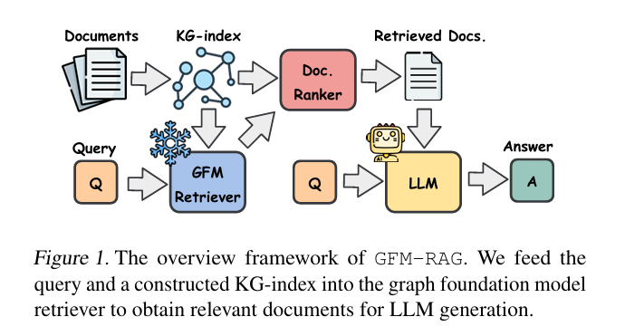
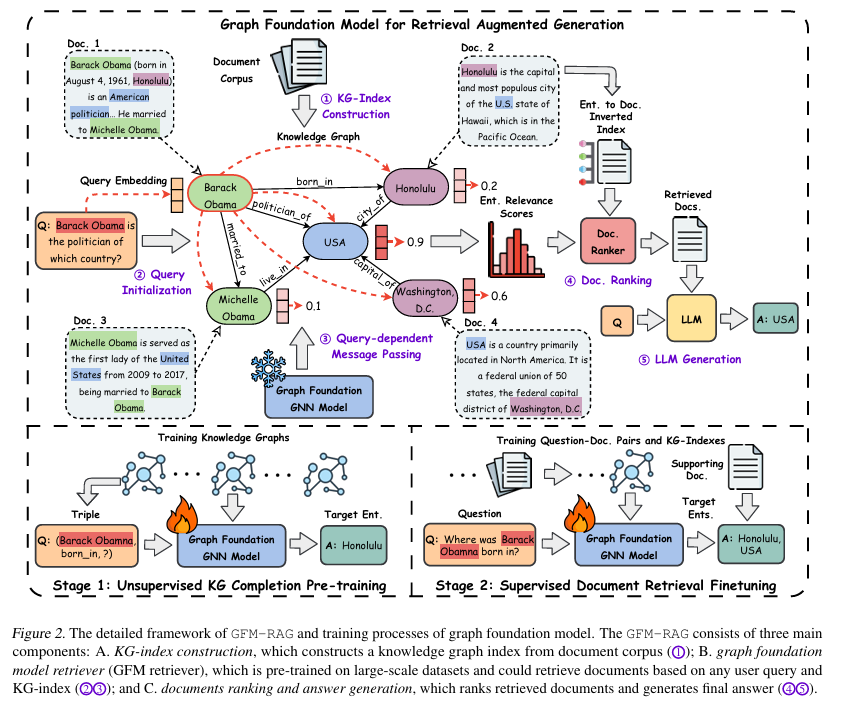

GFM-RAG:Graph Foundation Model for Retrieval Augmented Generation
DOI: https://doi.org/10.48550/arXiv.2502.01113
publication:
Date of publication: 2025-02-03
code: https://github.com/RManLuo/gfm-rag
a graph-enhanced(pre-trained) retriever
Implement “Multi-hop Inference and multi-hop Retrieval of Graph” by embedding fine-tuning
more effective than single-step methods and more efficient than multi-step ones
GFM-RAG structure

KG-index
factual triples pointing to original document
extract entities $\mathcal{E}$ & relations $\mathcal{R}$
mentioned index $ M \in \{0, 1 \} ^{|\mathcal{E}| \times |\mathcal{D}|}$
add addtional edges between similar semantic entities
GFM retriever

query dependent GNN
entity representations updating on query $q$ after layer $L$
capturing query-specific info. in GNNsame frozen sentence embedding model
- for every query $q$
- entity features initialization:
- passing messages on triplesMsg: $NBFNet: f(e_h, r, e_t) = e_h^T w_R e_t$
g: 2 layer MLP
$m_e^{l+1}$: “从关系和邻居实体的角度”传给实体e 的信息
- [ ] $H^0 = h_e^0$???
- [ ] $h_e^0$ initialized by query $q$?
- [ ] does/how $h_r^l$ updating?
- for every query $q$
relevant score to a centain query
training loss
maximize the likelihood of relevant entities to the query
BCE & RANK
Training
step 1: unsupervised KG completion
sample a set of triples from KG $q = (e, r, e’)$
mask head or tail entity
query $q = (e, r, ?)$ or $q = (?, r, e’)$
predict the masked entity from $q$ and KG
step 2: supervised document retrieval fine-tuning
- $q$: natural language questions
- labeled target entity
generation
top-T entities
weigh by reverse of document mentioning frequency
banlance popular entities
calculate document relevant score -> retrieval argument
Experiment Results
- GFM-RAG is not sensitive to different sentence embedding models
- the
pre-trainingstrategy,aswellasthelossweightingstrategy,
arebothcrucialfortheperformanceofGFM-RAG. fit nerual scaling law
path interpretations
[ ] NBFNet
multi-hop distribution
model transferability
domain specific: perform well in zero-shot generation